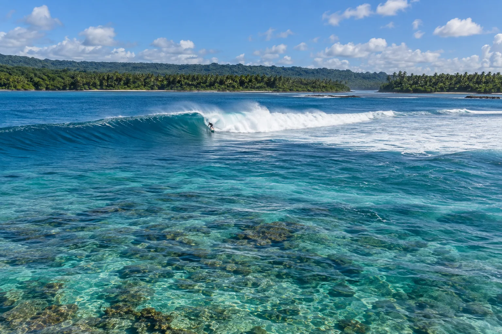

Salani
Upolu, Samoa · surf

Droite et gauche de récif devant un village samoan. Des vagues parfaites dans un décor de jungle.
- Lieu
- Upolu, Samoa
- Niveau
- Expert
- Activités
- surf
- Type d'eau
- Mer / océan
- Coordonnées
- -14.03, -171.57 (position approximative du secteur)
Dangers à connaître
- Récif.
- Courant dans la passe.
Le conseil d'Ocean Buddy
Respecte les coutumes du village, qui gère l’accès aux vagues.
Ouvrir dans Ocean Buddy Télécharger sur l'App Store
Source : Fiche Ocean Buddy · septembre 2026 · à vérifier localement.